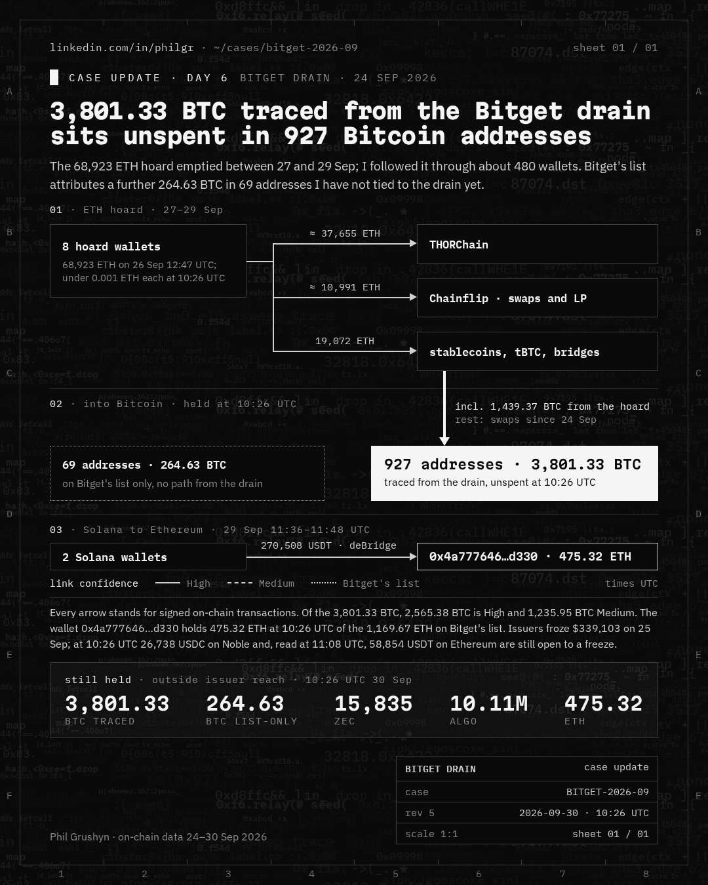

This is the complete trace behind my updates on the Bitget drain of 24 Sep 2026: every wallet and every transaction I followed, on one zoomable page. At 10:26 UTC on 30 Sep 2026, 3,801.33 BTC traced from the drain sits unspent in 927 Bitcoin addresses.
Each box is an address; each arrow is one or more signed on-chain transactions, with amount and UTC time. The trace starts at the drained Bitget wallets and follows the funds across 18 chains, through THORChain, Chainflip, CoW, deBridge, Stargate, Across and the exchanges they touched, to where they sit now.
| BTC traced from the drain · 927 addresses (High 2,565.38 · Medium 1,235.95) | 3,801.33 BTC |
| BTC on Bitget's list only · 69 addresses | 264.63 BTC |
ETH · 0x4a777646417b0Fd34715d2b21d4a132c06AEd330, of 1,169.67 ETH on Bitget's list | 475.32 ETH |
ZEC · t1WgMdtND8NF7NDUuYmq8MpMj1NTCXkMDVG | 15,834.87 ZEC |
ALGO · 7EKUW3XG3W2LW37N4AALS54FFXIPPDRD5W47C7UD44S6Z2XNNFMXQA4UJ4 | 10.11M ALGO |
| frozen by issuers since 25 Sep · 2 wallets | $339,103.41 |
open to an issuer freeze · USDC on Noble, noble1k9hfljezevcktymd280hmqnvuv63ahjlpdp7a6 | 26,737.72 USDC |
| open to an issuer freeze · USDT on Ethereum, 2 wallets, read 11:08 UTC | 58,854.15 USDT |

Everything here is read from public blockchains and from the protocols' own public indexers; each claim, hash and time is in the gist update (file 10) and the per-address table (file 11). The map shows what I traced, not everything that exists: an address with no path from the drain is not on it unless it is on Bitget's list.
If you run an exchange, a bridge or an issuer and one of these addresses reaches you, please contact Bitget and SEAL 911.